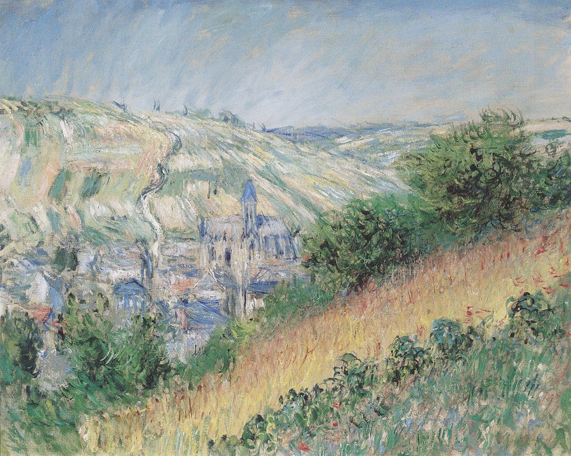

Impresjonizm — światło na płótnie
Wiedeńska Albertina zaprasza na imponującą wystawę Impressionismus — Wie das Licht auf die Leinwand kam. 170 eksponatów, w tym dzieła Courbeta, Caillebotte’a, Maneta, Moneta, Renoira, Cézanne’a, Pissarra, Signaca i van Gogha przybliżą fascynujący świat malarstwa impresjonizmu i postimpresjonizmu.
75 malowideł z kolekcji Wallraf-Richartz-Museums & Fondation Corboud z Kolonii uzupełniają cenne dzieła ze zbiorów wiedeńskiej Albertiny oraz Sammlung Batliner, a także obrazy wypożyczone z prywatnych kolekcji i muzeów całego świata. 40 oryginalnych przedmiotów z warsztatów artystycznych oraz przybory malarskie unaoczniają dzień powszedni artystów oraz ich przygotowania do pracy malarskiej.
Impressionismus
Wie das Licht auf die Leinwand kam
Od 11 września 2009 do 10 stycznia 2010.